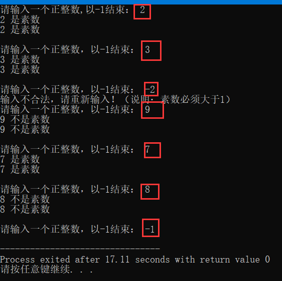

一、概念介绍
素数又称为质数。一个大于1的自然数（从2开始），除了1和它本身外，不能被其他自然数整除的叫做素数，否则称为合数。
0和1既不是素数也不是合数，最小的素数是2。
二、代码
方法一：
bool is_Prime(int num){
int i;
for(i = 2;i <= sqrt(num);i++){
if(num % i == 0)//一旦发现有因子，则返回false
return false;
}
return true;
} 注意：在for循环判断时不能忘记 i <= sqrt(num) 的等号，因为假设 p*p = n , n的因子是可以取到 sqrt(n) 的，如判断 9 是不是素数，如果没有等号会出现 9是素数，而实际上 9不是素数。
方法二：
关于质数分布的规律：大于等于5的质数一定和6的倍数相邻。例如5和7，11和13,17和19等等；
证明：令x≥1，将大于等于5的自然数表示如下：
··· 6x-1，6x，6x+1，6x+2，6x+3，6x+4，6x+5，6(x+1），6(x+1)+1 ···
可以看到，不和6的倍数相邻的数为6x+2，6x+3，6x+4，由于2(3x+1)，3(2x+1)，2(3x+2)，所以它们一定不是素数，再除去6x本身，显然，素数要出现只可能出现在6x的相邻两侧。因此在5到sqrt(n)中每6个数只判断2个，时间复杂度O(sqrt(n)/3)。
在高配版和尊享版中，都是一个剪枝的思想，高配版中裁剪了不必要的偶数，尊享版中裁剪了不和6的倍数相邻的数，虽然都没有降低时间复杂度的阶数，但都一定程度上加快了判断的速度。
原文链接：https://blog.csdn.net/songyunli1111/article/details/78690447
/*一种高效的方法*/
bool isPrime_3(int num){
//两个较小数另外处理
if(num == 2 || num == 3)
return true;
//不在6的倍数两侧的一定不是质数
if(num % 6 != 1 && num % 6 != 5)
return false;
int i;
//在6的倍数两侧的也可能不是质数
for(i = 2;i <= sqrt(num);i += 6){
if(num % i == 0 || num % (i + 2) == 0)
return false;
}
//排除所有，剩余的是质数
return true;
}
三、测试
对负数与0，1进行异常处理
int main(){
int num;
bool result1,result2;
printf("请输入一个正整数,以-1结束： ");
scanf("%d",&num);
while(num < 2 && num != -1){
printf("输入不合法，请重新输入！（说明：素数必须大于1）\n");
printf("请输入一个正整数，以-1结束： ");
scanf("%d",&num);
}
while(num >= 2 && num != -1){
result1 = isPrime(num);
result2 = isPrime_3(num);
if(result1 == true)
printf("%d 是素数\n",num);
else if(result1 == false)
printf("%d 不是素数\n",num);
if(result2 == true)
printf("%d 是素数\n\n",num);
else if(result2 == false)
printf("%d 不是素数\n\n",num);
printf("请输入一个正整数，以-1结束： ");
scanf("%d",&num);
while(num < 2 && num != -1){
printf("输入不合法，请重新输入！（说明：素数必须大于1）\n");
printf("请输入一个正整数，以-1结束： ");
scanf("%d",&num);
}
}
}
四、截图
